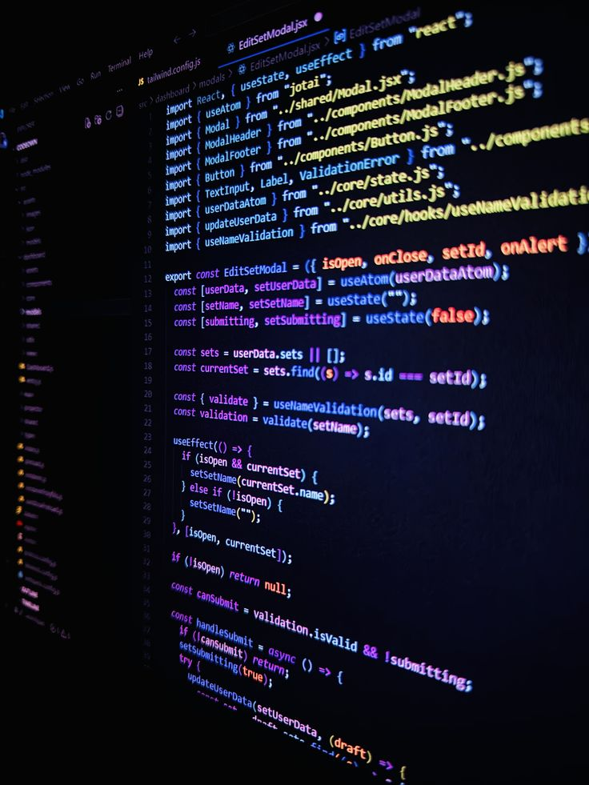

The branch of philosophy that studies reasoning, inference, and the
structure of arguments — asking what makes a conclusion follow from
its premises, how valid reasoning differs from flawed reasoning, and
how formal systems can represent the relationships between
propositions.
What Is Logic?
Logic is the branch of philosophy concerned with the principles of
correct reasoning, argument, and inference. It examines
how premises support conclusions and whether a conclusion follows from
the information given. Questions in logic include: What makes an
argument valid? What is the difference between validity and soundness?
How can reasoning be distinguished from a logical fallacy? When does
evidence provide adequate support for a conclusion? Because these
questions concern the structure and quality of reasoning itself, logic
has applications across philosophy, mathematics, science, law, computer
science, language, and everyday decision-making.
Like a blueprint, a logical argument can be examined for structural
strength independently of the particular subject matter it contains.
A fundamental distinction in logic is between
validity and soundness. A deductively
valid argument has a logical form in which it is impossible for all of
its premises to be true while its conclusion is false. Validity
therefore concerns the relationship between premises and conclusion
rather than whether the premises are actually true. A
sound argument is both valid and composed of true
premises. This means that a valid argument can still have a false
conclusion when one or more of its premises are false, whereas a sound
deductive argument must have a true conclusion. Understanding this
distinction is essential for evaluating philosophical arguments,
mathematical proofs, scientific reasoning, and claims encountered in
ordinary life.
Logic also studies several different forms of reasoning, each serving a
different epistemic purpose. Deductive reasoning seeks
conclusions that follow necessarily from their premises, while
inductive reasoning generally provides probabilistic or
evidential support rather than certainty.
Abductive reasoning, often called
inference to the best explanation, begins with
observations or evidence and asks which available hypothesis best
explains them. Philosophical inquiry, scientific investigation,
diagnosis, legal reasoning, and practical decision-making may combine
deduction, induction, and abduction rather than relying on a single type
of inference.
Logic is also concerned with the difference between a merely persuasive
argument and a logically well-supported one. An argument may appear
convincing because of rhetoric, emotion, authority, repetition, or
familiarity while still containing a weak inference or a formal or
informal
logical fallacy. Logical analysis therefore asks
whether the relevant premises actually support the conclusion and
whether important assumptions have been left unstated. Common examples
of defective reasoning include affirming the consequent, denying the
antecedent, circular reasoning, false dilemmas, hasty generalization,
and appeals that substitute irrelevant considerations for genuine
evidence. Studying such errors helps clarify how arguments succeed or
fail.
Logic developed historically within philosophy and became increasingly
formal through the development of symbolic and mathematical logic.
Ancient philosophers examined argument forms, contradiction, definition,
demonstration, and the conditions of rational inquiry, while later
developments produced formal systems capable of representing
propositions, predicates, quantifiers, relations, proofs, and formal
semantics. Modern logic includes propositional and predicate logic as well as
modal, temporal, epistemic, deontic, intuitionistic, paraconsistent, and
other non-classical systems. These developments have made logic
important not only to philosophy and mathematics but also to computer
science, artificial intelligence, programming, formal verification,
linguistics, and the analysis of knowledge and reasoning.
At a deeper level, logic asks what makes reasoning rational and what
limits formal systems have when they attempt to represent truth and
inference. Questions about
truth, proof, consistency, completeness, decidability, contradiction,
and formal inference
connect logic with epistemology, metaphysics, philosophy of mathematics,
philosophy of language, and philosophy of science. Logic is therefore
not simply a collection of rules for avoiding mistakes; it provides
conceptual and formal tools for understanding how conclusions are
derived, how arguments can be evaluated, and how reliable reasoning
operates across different domains of human inquiry.
Core Questions Logic Asks
Logic organizes its central problems around inference, consequence,
consistency, truth, and the structure of arguments. Some questions
concern everyday reasoning, while others lead into highly technical
areas of philosophy and mathematics. Together they reveal why logic is
not merely a collection of rules for avoiding mistakes, but a systematic
investigation into what it means for one proposition to follow from
another.
Logic examines how propositions and inferences fit together, much like
precisely connected gears in a larger mechanism.
What makes an argument valid? What structural
relationship must hold between premises and conclusion for the
conclusion to follow necessarily?
What is the difference between validity and truth?
Can an argument have a valid form even when its premises are false?
How should inductive reasoning be evaluated? When
does evidence make a conclusion sufficiently probable or well
supported?
How can natural-language arguments be analyzed? Can
ambiguous or complicated statements be translated into clearer logical
forms?
What are logical connectives and quantifiers? How do
expressions such as "not," "and," "or," "if," "all," and "some" affect
the structure of propositions?
Can reasoning be formalized? To what extent can
arguments be represented by symbols, axioms, rules of inference, and
mathematical proof?
What are the limits of formal reasoning? Do formal
systems have principled limits on what they can prove or decide?
Arguments, Premises, Conclusions, and Inference
The basic object studied in much of philosophical logic is the
argument. An argument consists of premises offered as
reasons for accepting a conclusion. A premise is therefore not simply
any statement appearing before another statement; its role is to provide
support for the conclusion. The conclusion is the proposition that the
argument attempts to establish. Identifying these roles is the first
step in evaluating reasoning because an argument can contain several
statements while only some function as premises and one or more function
as conclusions.
The relationship between premises and conclusion is called
inference. In deductive inference, the intended
relationship is one of logical necessity: if the premises are true and
the argument is valid, the conclusion cannot be false. In non-deductive
reasoning, the premises may instead increase the likelihood or
explanatory credibility of the conclusion without guaranteeing it. This
distinction is important because an argument should be evaluated
according to the kind of support it is attempting to provide.
Consider the simple deductive pattern: "All humans are mortal. Socrates
is human. Therefore, Socrates is mortal." The argument is valid because
there is no possible interpretation under which both premises are true
and the conclusion is false. Whether an argument is sound requires a
second question: are the premises actually true? Logic therefore
separates the assessment of an argument's structure from the independent
investigation of the claims used as its premises.
This distinction also explains why discovering that an argument is
invalid does not automatically show that its conclusion is false. A
conclusion may be true even when the reasoning offered in its support is
defective. Conversely, a conclusion can be false even when an argument
has a valid form if one of its premises is false. Logic evaluates the
inferential relationship; other disciplines and forms of inquiry may be
needed to establish the truth of the premises themselves.
Validity, Soundness, and Logical Consequence
Validity is one of the foundational concepts of
deductive logic. A deductive argument is valid when its logical form
guarantees that if all its premises are true, its conclusion must also
be true. Validity does not depend on whether the premises are actually
true. For example, "All birds are mammals; all mammals are reptiles;
therefore, all birds are reptiles" has a deductive structure whose
validity can be tested independently of whether the premises correspond
to reality.
Soundness adds a requirement beyond validity. A sound
deductive argument must be valid and must also contain true premises.
Soundness is therefore a stronger property than validity. Every sound
argument is valid, but not every valid argument is sound. This
distinction prevents a common misunderstanding in introductory logic:
logical validity is not the same thing as factual correctness.
The concept of logical consequence expresses the same
relationship in a more formal way. A conclusion is a logical consequence
of a set of premises when there is no interpretation or admissible
assignment under which the premises are all true and the conclusion is
false. In formal logic, this relationship can be investigated using
symbolic languages and semantic methods. Logical consequence is
therefore closely connected with the central philosophical question of
why some inferences preserve truth while others do not.
Logic also distinguishes logical truth from ordinary empirical truth. A
logical truth is true in virtue of its logical structure or under the
relevant semantics of a formal system, whereas an empirical truth
depends upon how the world is. Logic can tell us that a valid inference
preserves truth, but it generally cannot determine whether an
observation about the physical world is true. Establishing empirical
premises requires evidence, observation, experiment, testimony, or other
appropriate methods of inquiry.
History of Logic
The history of logic begins long before modern symbolic notation.
Ancient Greek philosophers were already analyzing arguments,
definitions, contradiction, demonstration, and paradoxes. The Sophists
and Plato examined disputes about language and reasoning, while
philosophers such as Eubulides of Miletus became associated with famous
paradoxes including the Liar and Sorites paradoxes. Logic became a
distinct systematic discipline with Aristotle, whose logical writings
provided the earliest surviving comprehensive formal treatment of
inference in the Western tradition.
Aristotle systematized major forms of deductive reasoning and
established a framework that shaped logical study for centuries.
Aristotle developed his theory of
syllogistic reasoning, analyzing arguments involving
categorical statements such as "All humans are mortal" and "Some animals
are rational." His logical works, later grouped under the title
Organon, also addressed topics such as demonstration,
definition, contradiction, and dialectical reasoning. Aristotle did not
invent reasoning itself, but he systematized important patterns of
inference into a sustained theoretical discipline. His work became
enormously influential in later Greek, Islamic, Jewish, and
Latin-Christian intellectual traditions.
Aristotle was not the only major logician of antiquity. The Stoics,
particularly Chrysippus, developed a different approach centered more
directly on propositions and their combinations. Stoic logic
investigated patterns that resemble important aspects of modern
propositional logic. Much of the original Stoic literature has been
lost, but surviving reports show that ancient logic was more diverse
than a simple history in which Aristotle alone created the discipline.
During the medieval period, logic became an important part of
philosophical education in both Latin Europe and the Islamic
intellectual world. Philosophers and logicians developed sophisticated
analyses of terms, propositions, modality, consequence, and disputation.
Thinkers such as Avicenna and later medieval Latin logicians contributed
substantially to the development of logical theory. Aristotle's works
were translated, commented upon, criticized, and integrated into broader
philosophical systems.
The decisive transformation toward modern mathematical logic occurred
during the nineteenth century. George Boole developed an algebraic
treatment of logic, while Gottlob Frege's Begriffsschrift of
1879 introduced a powerful formal system for representing logical
relations and quantification. Charles Sanders Peirce also made major
contributions to logic and signs. Later, Bertrand Russell and Alfred
North Whitehead used formal logic in the ambitious
Principia Mathematica. The resulting tradition transformed
logic from primarily a theory of syllogistic reasoning into a
mathematical discipline capable of expressing much richer structures.
The twentieth century brought further developments through figures such
as Kurt Gödel, Alfred Tarski, David Hilbert, Alonzo Church, Alan Turing,
and many others. Gödel's incompleteness theorems demonstrated important
limits on what sufficiently expressive consistent formal systems can
prove. Tarski made fundamental contributions to formal semantics and the
theory of truth, while Church and Turing transformed the study of
computability. Modern logic consequently became central not only to
philosophy and mathematics but also to theoretical computer science and
the foundations of computation.
Major Types of Logic
Logic contains several interconnected traditions rather than one single
method of reasoning. The distinction between
deductive and inductive reasoning is
especially important. Deductive arguments are evaluated according to
standards such as validity and soundness, while inductive arguments are
commonly evaluated according to the degree of support their premises
provide for their conclusions.
Abductive reasoning introduces another important
pattern by asking which explanation best accounts for the available
evidence. These forms of reasoning differ in their aims and standards,
but together they provide important tools for understanding how
conclusions can be supported by premises, observations, evidence, and
explanatory hypotheses.
Inductive reasoning can make a conclusion highly probable without
making it logically certain.
Deductive logic studies arguments in which the
conclusion is intended to follow necessarily from the premises. A
deductively valid argument is one in which it is impossible for all the
premises to be true while the conclusion is false.
Soundness adds a further requirement: the argument must
be valid and its premises must actually be true. Classical examples
include categorical syllogisms and propositional arguments, while modern
deductive logic uses formal systems to analyze increasingly complex
structures of reasoning. Deduction is therefore central to mathematics,
philosophy, computer science, formal proofs, and rigorous argumentation.
Inductive logic and inductive reasoning concern
arguments in which the premises provide support for a conclusion without
guaranteeing it. Generalizations from observations, predictions about
future events, statistical arguments, and reasoning from samples are
common examples. Even when the premises are true, an inductive
conclusion can turn out to be false. The philosophical problem is
therefore not simply whether an inductive argument is valid, but how
strongly the available evidence supports its conclusion. Questions about
probability, confirmation, evidence, generalization, and the
justification of scientific beliefs are closely connected with the
philosophical study of induction.
Abductive reasoning, often described as
inference to the best explanation, begins with evidence
that requires explanation and considers which hypothesis best accounts
for it. If a particular observation would be expected under one
explanation but not under competing explanations, that explanation may
receive greater rational support. Abduction is especially important in
scientific reasoning, diagnosis, historical investigation, detective
reasoning, and everyday problem-solving. Unlike deduction, it does not
guarantee its conclusion, and unlike simple induction, its central
concern is often explanatory adequacy rather than merely projecting
observed patterns.
Formal logic represents arguments using precisely
defined languages and rules. Instead of relying entirely on the
ambiguities of ordinary language, formal logic can use symbols to
represent propositions, connectives, predicates, quantifiers, identity,
and relations. This makes it possible to determine whether particular
argument forms are valid and to study the formal properties of entire
logical systems. Major areas include
propositional logic, which studies combinations of
propositions through logical connectives, and
predicate logic, which provides tools for representing
objects, properties, relations, and quantified statements. Formal logic
became particularly important in modern philosophy through developments
associated with thinkers such as Frege, Russell, and later logicians.
Informal logic examines reasoning as it appears in
ordinary language and practical argumentation. It considers issues such
as relevance, ambiguity, hidden assumptions, evidential support,
rhetorical strategies, argumentative structure, and
fallacious reasoning. Informal logic is particularly
important for analyzing arguments in journalism, politics, advertising,
law, academic writing, public debate, and everyday conversation. Unlike
formal logic, which often abstracts away from contextual features of
language, informal approaches can examine how arguments actually
function in particular communicative and social settings.
Classical logic provides the traditional framework
within which many familiar logical principles are studied. Classical
propositional and predicate logic commonly incorporate principles such
as the law of non-contradiction and, in standard
formulations, the law of excluded middle. These systems
have played a foundational role in mathematics, analytic philosophy,
computer science, and formal reasoning. Their importance does not mean
that all philosophical questions can be settled by classical logic
alone; rather, classical logic provides one particularly influential
formal framework against which alternative logical systems can be
understood and compared.
Other logical systems have been developed for specialized philosophical,
mathematical, linguistic, and computational purposes.
Modal logic studies concepts such as necessity,
possibility, and related notions. Temporal logic
represents relationships involving time and temporal ordering, while
epistemic logic analyzes formal relationships involving
knowledge and belief. Deontic logic investigates
concepts such as obligation, permission, and prohibition, making it
particularly relevant to ethics, law, and normative reasoning. Other
systems address vagueness, uncertainty, inconsistent information,
computation, and alternative conceptions of truth.
Non-classical logics modify, restrict, or reject some
principles associated with classical logic in order to address
particular philosophical or mathematical problems.
Intuitionistic logic, for example, is closely connected
with constructive mathematics and does not generally accept the
unrestricted classical principle of excluded middle.
Paraconsistent logics investigate systems in which
certain contradictions do not automatically lead to every proposition
becoming derivable. Many-valued and
fuzzy approaches explore ways of representing forms of
truth or degrees of truth that do not fit neatly into a simple
true-or-false framework. These developments demonstrate that the
philosophical study of logic also involves questions about what logical
systems should represent and what counts as legitimate inference.
The different types of logic are not necessarily isolated competitors.
Deductive reasoning can establish what follows from accepted
assumptions, induction can support generalizations and predictions from
evidence, and abduction can help identify promising explanations. Formal
logic can make argumentative structures precise, while informal logic
can examine the contextual and rhetorical features of real-world
reasoning. Modal, temporal, epistemic, and deontic systems then extend
formal analysis into domains involving possibility, time, knowledge,
belief, obligation, and permission. Understanding these connections
gives a broader picture of logic as the philosophical study of
reasoning, inference, validity, consistency, evidence, and rational
argument.
Propositional Logic and Logical Connectives
Propositional logic, also called sentential logic,
studies arguments by treating complete propositions as basic units and
examining how they are combined by logical operators. A proposition can
be represented by a symbol such as p or
q. The internal structure of those propositions is
temporarily set aside so that the logical behavior of their combinations
can be studied precisely.
Important logical connectives include negation,
conjunction, disjunction,
conditional, and biconditional.
Negation is commonly represented as "not"; conjunction corresponds
roughly to "and"; disjunction to "or"; a conditional to "if...then"; and
a biconditional to "if and only if." These operators allow complex
propositions to be constructed from simpler ones and provide the basic
vocabulary for many formal arguments.
Truth tables provide one important method for
evaluating propositional formulas. By systematically considering the
possible truth values of their component propositions, a truth table can
reveal whether a compound expression is true under all relevant
assignments, false under all assignments, or true under some but not
all. This makes it possible to identify concepts such as logical truth,
contradiction, and contingency with considerable
precision.
Propositional logic is powerful but deliberately limited. Because its
basic units are whole propositions, it does not by itself represent the
internal structure of statements such as "Every philosopher is curious"
or "Some philosopher is not a logician." To express relationships
involving individuals, properties, and quantities, logicians require the
richer language of predicate or first-order logic.
Predicate Logic and Quantifiers
Predicate logic, particularly first-order logic,
extends propositional logic by representing the internal structure of
propositions. Instead of treating an entire sentence as an indivisible
unit, it can represent individuals, properties, and relations. A
predicate such as "is mortal" can be applied to an individual, while
relational predicates can express structures such as "is greater than"
or "admires."
Quantifiers are central to predicate logic. The
universal quantifier expresses claims about everything
in a relevant domain, while the existential quantifier
expresses claims that at least one thing satisfies a condition. This
makes it possible to distinguish precisely between statements such as
"All philosophers are thinkers" and "Some philosophers are thinkers."
Such distinctions are difficult to represent adequately using only the
basic vocabulary of propositional logic.
First-order logic became one of the most important achievements of
modern logic because it provides a general framework for expressing
mathematical theories and many forms of ordinary reasoning. Its formal
language allows logicians to study validity, satisfiability, proof,
interpretation, and logical consequence with mathematical precision. It
became a major foundation for the philosophy of mathematics and
theoretical computer science.
Predicate logic also demonstrates why translating ordinary language into
formal notation requires care. Natural-language sentences often contain
ambiguity, context-dependent meanings, presuppositions, or quantifier
structures that are not immediately obvious. Formalization is therefore
not merely replacing words with symbols; it is an analytical process
that attempts to identify the logical structure relevant to the
argument.
Categorical Syllogisms and Aristotelian Logic
Aristotle's most famous contribution to logic is his theory of the
categorical syllogism. A categorical syllogism contains
premises and a conclusion involving categories or classes, traditionally
expressed through forms such as "All A are B," "No A are B," "Some A are
B," and "Some A are not B." Aristotle systematically analyzed which
combinations of such propositions yield valid conclusions.
A classic example is: "All humans are mortal. Socrates is a human.
Therefore, Socrates is mortal." The argument illustrates how a general
premise and a particular premise can combine to produce a conclusion.
Aristotle's achievement was not simply discovering this particular
argument but developing a systematic theory of the forms through which
categorical statements can support conclusions.
Aristotelian syllogistic does not capture every form of reasoning
recognized by modern logic. Modern predicate logic can represent
relations, multiple quantifiers, and structures that Aristotle's system
cannot adequately express. Nevertheless, Aristotelian logic remains
historically important because it provided one of the earliest
systematic accounts of deductive inference and influenced philosophical
education for centuries.
The later history of logic should therefore not be understood as simply
replacing a completely useless ancient system with a modern one.
Aristotle's logical analyses continue to be studied because they reveal
fundamental questions about categorization, inference, predication, and
formal structure. Modern logic expanded the available expressive and
mathematical resources while also providing new ways to understand the
achievements and limitations of earlier systems.
Deductive, Inductive, and Abductive Reasoning
Deductive reasoning aims at necessary consequences. If
a deductively valid argument has true premises, its conclusion cannot be
false. The defining feature of deduction is therefore the relationship
between premises and conclusion rather than whether the conclusion
happens to be true in the real world. Mathematical proofs provide an
especially clear example because each conclusion is intended to follow
from accepted axioms, definitions, and previously established results
according to recognized rules of inference. In philosophy, deduction is
also used to clarify the consequences of particular assumptions and to
determine whether a conclusion follows logically from a set of premises.
Inductive reasoning does not normally provide this kind
of guarantee. Instead, evidence can make a conclusion more or less
probable. Generalizations from observations, predictions based on
repeated patterns, statistical reasoning, and many forms of scientific
inference rely upon this kind of reasoning. An inductive argument is
therefore not defective merely because its conclusion is not certain.
Its quality is assessed by how strongly the evidence supports the
conclusion and whether the evidence is sufficiently relevant,
representative, reliable, and extensive. This distinction is important
because induction plays a central role in reasoning about empirical
matters, where knowledge usually depends on observation without
providing deductive certainty about every future or unobserved case.
Abductive reasoning begins with an observation, event,
or surprising fact and considers which explanation would best account
for it. If a laboratory instrument suddenly gives an unexpected reading,
for example, a scientist may compare several possible explanations
before investigating the hypothesis that best fits the available
evidence. Similarly, a physician may consider competing explanations for
a patient's symptoms, while a historian may compare different
interpretations of surviving evidence. Abduction does not guarantee that
its preferred explanation is true. Instead, its strength depends on
factors such as explanatory power, coherence with existing evidence,
simplicity, plausibility, and the ability to account for relevant
observations.
Charles Sanders Peirce gave particular philosophical importance to
abduction and argued that scientific inquiry involves
interconnected forms of reasoning. A hypothesis may be proposed
abductively, its consequences can then be derived deductively, and those
consequences can subsequently be examined through inductive inquiry and
empirical testing. For example, deduction can show what should be
observable if a proposed hypothesis were correct, while induction can
evaluate how well repeated observations support the resulting
predictions. This does not reduce deduction, induction, and abduction to
one another; rather, it shows how different kinds of inference can
cooperate within a larger process of investigation. Understanding their
differences is therefore essential to understanding logic, scientific
reasoning, argumentation, evidence, and rational inquiry.
Common Logical Fallacies
A fallacy is a type of error or defect in reasoning.
The study of fallacies is more complicated than memorizing a list of
forbidden phrases because philosophers disagree about how particular
fallacies should be defined and classified. A fallacious argument may
fail because its inferential structure is defective, because it relies
upon an unjustified assumption, because relevant evidence is ignored, or
because its reasoning violates important standards of good
argumentation.
Fallacious reasoning can resemble legitimate reasoning closely enough
to make careful analysis necessary.
An ad hominem argument attacks a person rather than
addressing the relevant merits of their reasoning. A
straw man misrepresents an opponent's position so that
a weaker version can be attacked. A
false dilemma treats a situation as though only two
alternatives existed when additional possibilities are available.
Hasty generalization draws a broad conclusion from
insufficient or unrepresentative evidence.
Appeal to irrelevant authority occurs when a person's
status or expertise is treated as sufficient evidence in a context where
that authority is not appropriately qualified.
Some fallacies are identified primarily by their formal structure.
Affirming the consequent, for example, has the form "If
P, then Q; Q; therefore P." The premises do not guarantee the conclusion
because Q may have causes other than P. By contrast,
modus ponens has the valid form "If P, then Q; P;
therefore Q." Recognizing the difference between these patterns shows
why logical evaluation concerns the structure of inference rather than
simply whether the statements happen to sound convincing.
Fallacies should also be distinguished from false conclusions. A
conclusion can be true even when the reasoning offered for it is
fallacious, while an argument can have a perfectly valid form but begin
from false premises. Logic therefore does not treat "fallacy" as simply
another word for "false statement." Careful evaluation asks what the
premises establish, whether the inference is appropriate, what
assumptions are being made, and whether relevant evidence has been
ignored.
Formal Logic and Informal Logic
Formal logic studies reasoning by focusing on structure
that can be represented within a formal language. Symbols and explicitly
defined rules make it possible to determine whether particular forms of
inference preserve truth under the relevant semantics. Propositional
logic, predicate logic, modal logic, and many other systems belong to
this broad formal tradition.
Informal logic addresses arguments in natural language,
where meaning depends not only on logical form but also on context,
background knowledge, relevance, evidence, and conversational purpose.
Everyday arguments frequently contain implicit premises that must be
reconstructed before they can be evaluated. An advertisement, political
speech, legal argument, or philosophical essay may therefore require
more than a simple symbolic translation.
The two approaches are complementary rather than mutually exclusive.
Formal logic provides rigorous tools for analyzing structure, while
informal logic helps explain how reasoning actually functions in complex
human discourse. A strong critical thinker needs both the ability to
recognize formal patterns and the ability to evaluate relevance,
evidence, assumptions, ambiguity, and rhetorical context.
This distinction also explains why learning logic is not simply learning
a catalogue of fallacies. Good reasoning involves constructing strong
arguments as well as detecting weak ones. It requires identifying
premises, clarifying concepts, distinguishing relevant from irrelevant
evidence, recognizing uncertainty, and selecting an appropriate standard
of evaluation for the kind of argument being considered.
Logic, Truth, and Proof
Logic has a close relationship with truth, but logic and truth are not
the same thing. Truth concerns whether a proposition is
true, whether because it accurately represents reality, corresponds to
relevant facts, or satisfies the appropriate conditions within a formal
interpretation. Logical validity, by contrast, concerns
whether a conclusion follows from its premises by virtue of the logical
structure of the argument. A valid argument therefore does not
automatically have true premises. For example, an argument can have a
perfectly valid form while beginning with a false assumption. This
distinction between truth and validity is fundamental to logic because
logical analysis asks whether an inference preserves truth across the
relevant interpretations rather than simply whether the conclusion
happens to be true.
Soundness combines these two dimensions in an important
way. A deductive argument is sound when it is valid and its premises are
true. In a sound argument, therefore, the conclusion must be true. The
distinction between validity and soundness allows logicians to separate
questions about the structure of reasoning from questions about the
actual truth of the claims being used. A similar distinction appears in
formal logical systems, where one can ask whether every statement
derivable by the formal rules is semantically valid. These relationships
make truth, validity, soundness, inference, and proof closely connected
but conceptually distinct subjects within the philosophy and foundations
of logic.
A proof is a structured derivation in which each step
is justified according to accepted rules of inference, definitions,
axioms, or previously established results. Mathematical proof provides
the clearest example of this idea, although formal proofs can also occur
in logic itself. Proof transforms the intuitive idea that one
proposition follows from another into a sequence of explicitly justified
steps. In a formal deductive system, a proof begins with premises or
axioms and applies permitted inference rules to derive a conclusion.
This makes reasoning inspectable: rather than merely asserting that a
conclusion follows, the proof shows how it follows.
Modern logic distinguishes between a syntactic approach
and a semantic approach. Syntax concerns formal
expressions, symbols, formulas, and rules for manipulating them, while
semantics concerns interpretations, structures, models, and the
conditions under which formulas are true or false. A syntactic proof can
therefore be studied as a sequence of formally permitted
transformations, while a semantic argument can investigate whether a
formula is true in a particular interpretation or in every relevant
model. The distinction between syntax and semantics is one of the
foundations of modern logic and helps explain how formal languages can
represent arguments while also being assigned meaning.
The relationship between syntax and semantics gives rise to several
fundamental properties of logical systems.
Soundness concerns whether the formal proof system
derives only statements that are semantically valid, while
completeness concerns whether every statement that is
semantically valid can, under the relevant conditions, be formally
derived. Decidability concerns whether there is an
effective procedure that can determine, for the relevant class of
statements, whether they possess a particular logical property. These
concepts show that logic can investigate not only individual arguments
but also the general capabilities and behavior of formal reasoning
systems.
These distinctions became particularly important in twentieth-century
metamathematics. Results associated with figures such as
Kurt Gödel demonstrated that formal systems can possess
significant limitations under appropriate conditions. Gödel's
completeness theorem established an important
connection between semantic validity and formal provability for
first-order logic, while his
incompleteness theorems showed that sufficiently
expressive, consistent formal systems satisfying the relevant technical
conditions cannot prove every arithmetical truth expressible within
them. These results should not be interpreted simply as showing that
"mathematics cannot prove anything important." Rather, they reveal
fundamental distinctions between truth, formal provability, consistency,
and the expressive power of particular formal systems.
Logic consequently became not only a tool for reasoning within
mathematics and philosophy but also a subject in which mathematical
questions can be asked about the capabilities and limitations of
reasoning systems themselves. Questions about truth, proof, validity,
consistency, completeness, decidability, and incompleteness connect
logic with
epistemology,
philosophy of mathematics,
philosophy of language, and the foundations of
mathematics and computer science. Understanding these distinctions is
therefore essential to the broader philosophical question of what it
means for a conclusion to follow from reasons and what formal reasoning
can—and cannot—establish.
Limits of Formal Logic and Gödel's Incompleteness Theorems
One of the most important developments in twentieth-century logic came
from
Kurt Gödel. His incompleteness theorems showed that
certain sufficiently expressive and consistently axiomatized formal
systems capable of representing basic arithmetic cannot prove every
statement that is true in the intended interpretation of that
arithmetic. The result was revolutionary for the philosophy of
mathematics because it demonstrated principled limitations on formal
proof.
Gödel's theorems should not be simplified into the claim that
"mathematics is incomplete" in an unrestricted sense or that logic has
failed. The theorems apply under specific conditions to formal systems
with sufficient expressive power. They reveal that there can be a
difference between what a particular formal system can prove and what is
true in the intended mathematical interpretation.
Earlier developments in the foundations of mathematics had sought
rigorous methods for establishing mathematical certainty. Hilbert's
program, for example, pursued ambitious goals concerning the
formalization and justification of mathematics. Gödel's results,
together with work by Church, Turing, and others, showed that questions
about proof and computation have deeper limitations than many
foundational programs had hoped.
These results transformed rather than destroyed the study of logic. They
led to deeper investigations of computability, formal systems,
semantics, proof theory, model theory, and the boundaries between
mathematics and computation. The lesson is not that logical reasoning is
unreliable, but that every formal system has to be understood in terms
of its precise assumptions, expressive power, and intended
interpretation.
Logic and Philosophical Paradoxes
Paradoxes have played an important role in the history of logic because
they expose tensions that ordinary reasoning may conceal. The
Liar Paradox, associated with statements that appear to
assert their own falsity, raises difficult questions about truth,
self-reference, and semantic consistency. Its continuing influence can
be seen in modern theories of truth and formal semantics.
The Sorites Paradox concerns vague predicates such as
"heap," "bald," or "tall." If removing one grain of sand from a heap
does not seem sufficient to turn it into a non-heap, repeated
applications of that reasoning appear to generate a contradiction. The
paradox illustrates that logical reasoning can become complicated when
concepts have vague boundaries.
Russell's Paradox arose in connection with naive set
theory and the attempt to consider a collection of all sets that do not
contain themselves. The contradiction revealed a serious problem with
unrestricted principles of set formation and became one of the catalysts
for developments in mathematical logic and the foundations of
mathematics.
Philosophical paradoxes therefore do more than provide intellectual
puzzles. They can reveal hidden assumptions in a theory and force
philosophers and mathematicians to clarify concepts such as set, truth,
reference, identity, necessity, and membership. Logic often progresses
precisely because apparently simple arguments expose deeper structural
problems.
Modal and Non-Classical Logic
Classical logic provides the standard framework used in
much of introductory and mathematical logic, but philosophers and
mathematicians have developed alternative systems for purposes that
require different principles or expressive resources. These are often
grouped under the broad heading of non-classical logic.
They do not necessarily reject classical logic as useless; rather, they
explore what follows when different logical principles or semantic
assumptions are adopted.
Modal logic studies concepts such as necessity and
possibility. Instead of considering only whether a proposition is true,
modal logic can represent claims such as "It is necessarily true
that..." or "It is possibly true that..." Modal reasoning has become
important in metaphysics, philosophy of language, epistemology, computer
science, and the analysis of counterfactual reasoning.
Other systems address particular forms of reasoning. Temporal logics
represent relationships involving past, present, and future states.
Epistemic logics formalize certain relationships involving knowledge and
belief, while deontic logics investigate concepts such as obligation,
permission, and prohibition. Intuitionistic logic modifies classical
assumptions concerning proof and truth, while paraconsistent approaches
investigate systems in which certain contradictions need not make every
proposition derivable.
These systems demonstrate that the word "logic" refers to a family of
formal and philosophical disciplines rather than a single universal
calculus. Choosing a logical framework depends partly on what one wants
the system to represent and which properties of inference are most
important for the problem under investigation.
Logic in Mathematics and Science
Logic is fundamental to mathematical proof because mathematics requires
conclusions to be justified through explicit inferential relationships.
Definitions, axioms, lemmas, and theorems are connected through rules of
inference. Mathematical reasoning therefore provides one of the clearest
environments in which the concepts of consistency, validity, proof, and
consequence can be studied.
Scientific reasoning involves a broader mixture of logical methods.
Scientists use deduction to derive predictions from hypotheses,
induction to evaluate patterns across observations, and abductive
reasoning to develop explanations for unexpected phenomena. Logic alone
cannot tell scientists which hypotheses are empirically true, but it
helps clarify what follows from a hypothesis, whether evidence is
relevant, and whether a proposed conclusion is adequately supported.
The philosophy of science therefore relies heavily on logical analysis.
Questions about confirmation, explanation, prediction, falsification,
probability, causation, and theory choice often involve sophisticated
reasoning about evidence. Logic provides a framework for distinguishing
what an observation actually establishes from what a researcher merely
assumes it establishes.
Mathematical logic also contributed directly to the development of
modern computer science. Formal languages, algorithms, proof systems,
computability theory, automated reasoning, and programming-language
semantics all have deep connections with logical ideas. The relationship
between logic and computation is so close that some areas of computer
science can be understood partly as investigations into the mechanical
representation and transformation of information.
Logic in Computer Science and Artificial Intelligence
Logic is deeply embedded in computer science. Boolean operations provide
the foundation for digital circuits, while formal logic is used in
programming languages, databases, verification systems, automated
theorem proving, and the specification of software and hardware.
Conditional statements, logical operators, and tests of truth values are
familiar programming concepts that reflect formal structures developed
within mathematical logic.

Formal logic provides important foundations for computation,
programming, verification, and automated reasoning.
In computer science, formal verification uses
mathematical and logical methods to determine whether a program or
system satisfies specified properties. Instead of simply testing a
program with selected inputs, formal methods can attempt to establish
that certain properties hold across an entire class of possible states
or executions. This is especially important in systems where errors can
have serious consequences.
Logic also appears in artificial intelligence through knowledge
representation, automated reasoning, rule-based systems, planning, and
formal representations of relationships between entities. Modern AI uses
many techniques that are not reducible to classical symbolic logic,
including statistical and machine-learning methods, but logical
reasoning remains important wherever systems must represent constraints,
derive consequences, verify claims, or explain structured relationships.
The relationship between logic and artificial intelligence also raises
philosophical questions. A system can manipulate symbols or produce a
logically consistent response without necessarily possessing human-like
understanding, consciousness, or knowledge. Logic provides tools for
evaluating inference, but questions about meaning, interpretation,
intelligence, and understanding extend into philosophy of mind,
philosophy of language, epistemology, and computer science.
Logic in Everyday Life
Formal training in logic may seem confined to philosophy, mathematics,
and academic study, but logical reasoning is involved in ordinary life
far more often than people realize. Every time people compare
alternatives, evaluate an explanation, decide whether a claim is
credible, make a prediction, or determine what action is most likely to
achieve a goal, they are engaging in some form of reasoning. People
evaluate advertisements, compare conflicting reports, interpret
statistics, judge recommendations, make plans, assess risks, and respond
to arguments in conversations every day. Logical thinking helps separate
the evidence actually presented from conclusions that merely feel
persuasive, making it easier to identify assumptions, recognize gaps in
an argument, and determine whether a conclusion is adequately supported
by its reasons.
Logic is especially useful when information is incomplete, uncertain, or
conflicting. A careful reasoner can identify the assumptions behind a
claim, ask whether the evidence is relevant, distinguish correlation
from stronger forms of causal support, and consider alternative
explanations. This is important because everyday decisions rarely
provide the certainty available in a mathematical proof. Instead, people
often have to reason from probabilities, incomplete evidence, testimony,
past experience, and competing possibilities. Good reasoning therefore
does not require absolute certainty in every situation. It requires
conclusions to be proportionate to the strength of the available
evidence and a willingness to revise those conclusions when reliable new
information becomes available.
Logic is also valuable for recognizing misleading argumentative
strategies. A political advertisement may present an issue as a false
choice, a social media post may generalize from a single anecdote, and a
debate may attack the character of an opponent instead of addressing the
evidence supporting the opponent's claim. Other common errors include
confusing correlation with causation, relying on an unrepresentative
example, shifting the burden of proof, or treating popularity as
evidence of truth. Recognizing a logical fallacy does
not by itself prove that the opposing conclusion is correct; it simply
prevents a defective argument from receiving more support than it
deserves. This distinction is particularly important in an age of
rapidly circulating online information, where persuasive presentation
and repetition can easily be mistaken for evidence.
In Education and work, logical reasoning helps people
organize information, identify relevant evidence, solve problems, and
communicate conclusions clearly. Students use reasoning when
interpreting a historical source, evaluating a scientific explanation,
constructing an essay, or solving a mathematical problem. In
professional settings, employees and managers may compare proposals,
diagnose operational problems, evaluate data, identify risks, and
determine whether a proposed solution follows from the available
information. Logical thinking is therefore not limited to subjects
explicitly called "logic." It supports critical thinking across
disciplines by encouraging people to distinguish claims from evidence
and assumptions from conclusions.
Logic also plays an important role in everyday
Financial decisions decisions. Comparing prices,
evaluating discounts, considering loan costs, assessing investment
claims, and deciding whether a purchase represents good value all
require reasoning about evidence and alternatives. A person may need to
distinguish the total cost of an item from its advertised monthly
payment, question whether a percentage comparison is meaningful, or
determine whether an apparent bargain actually provides a benefit. Such
reasoning does not eliminate uncertainty or guarantee a financially
correct decision, but it can reduce the influence of misleading
comparisons, emotional appeals, and unsupported assumptions.
Logic is similarly useful when people encounter claims about
health, science, technology, and public information, .
An individual may encounter a claim that a particular product causes an
effect, that a scientific study proves a broad conclusion, or that two
events occurring together establish a causal relationship. Logical
analysis encourages questions about the quality of the evidence, the
size and representativeness of the sample, alternative explanations, and
whether the conclusion actually follows from the information presented.
This is especially important when distinguishing between a
well-supported conclusion and a confident statement that merely uses
scientific-sounding language.
Everyday communication also depends upon reasoning. In conversations,
people often need to determine what another person actually claimed,
whether a disagreement concerns facts or interpretations, and whether
two apparently conflicting statements can be reconciled. Good reasoning
can prevent misunderstandings by separating the original claim from
assumptions added during an argument. It can also encourage people to
ask clarifying questions rather than immediately responding to a
position they have misunderstood. In this sense, logic contributes not
only to winning arguments but also to improving the accuracy and
fairness of ordinary discussion.
Planning and decision-making provide another major area in which logical
reasoning operates. Choosing a route, organizing a schedule, preparing
for an examination, selecting between job opportunities, or deciding how
to allocate limited time all involve identifying goals, considering
available options, anticipating consequences, and comparing
alternatives. Deductive reasoning can establish what follows from
accepted information, inductive reasoning can draw upon patterns from
previous experience, and abductive reasoning can help identify the
explanation that best accounts for an unexpected situation. These forms
of reasoning frequently work together rather than appearing as
completely separate activities.
Troubleshooting is another ordinary form of structured reasoning. When a
device stops working, a person may identify possible causes, test
hypotheses, eliminate explanations that conflict with the evidence, and
revise the diagnosis when new information appears. The same pattern can
occur when investigating why a project is behind schedule, why a
household expense has unexpectedly increased, or why a particular result
differs from what was expected. Such reasoning combines deduction,
induction, and abduction, demonstrating that logical thinking is not
limited to academic exercises but is part of practical problem-solving
and diagnosis.
Logic can even improve personal decision-making by making hidden
assumptions more visible. People sometimes reason from habit, emotional
reactions, social pressure, or a desire for a particular conclusion
without examining the premises supporting it. Logical reflection creates
an opportunity to ask what is actually known, what is merely assumed,
what evidence would change the conclusion, and whether alternative
explanations have been considered. It does not require human beings to
eliminate emotion from decision-making, nor does it suggest that every
personal decision can be reduced to a formal argument. Rather, logic
provides tools for making reasoning more explicit, consistent, and
responsive to evidence.
For this reason, learning logic has practical value beyond the study of
formal arguments. It develops habits of questioning, comparison,
clarification, evidence evaluation, and intellectual self-correction
that can be applied across everyday life. Whether a person is reading a
news report, evaluating an online claim, making a purchase, solving a
technical problem, planning for the future, or discussing a
disagreement, the central logical question remains similar:
what reasons support this conclusion, and do those reasons actually
justify believing it?
Logic does not guarantee that people will always reach the correct
answer, but it provides a disciplined framework for reasoning more
carefully about the answers that matter.
Logic in Action: Examples of Valid and Invalid Reasoning
Seeing valid and invalid reasoning side by side makes the distinction
between logical form and factual truth easier to understand. A valid
argument does not have to contain complicated symbols or technical
terminology. What matters is whether its logical structure makes it
impossible for the premises to be true and the conclusion false. An
argument can therefore be valid even when its subject matter is
ordinary, while an argument can be invalid even when its conclusion
happens to be true. Logical analysis focuses first on the relationship
between premises and conclusion rather than simply asking whether the
conclusion agrees with reality.
A valid deductive argument preserves truth from its premises to its
conclusion when the premises are true.
A classic valid argument is: "All philosophers ask
questions. Socrates was a philosopher. Therefore, Socrates asked
questions." If both premises are true, the conclusion cannot be false
under the stated logical structure. The important point is not whether
this simplified example captures every historical fact about Socrates,
but whether the conclusion follows from the premises. The same
underlying structure can be represented more generally as: all A are B;
C is A; therefore C is B. This illustrates how formal logic abstracts
away from particular subject matter in order to examine the pattern of
inference.
An invalid argument can have premises and a conclusion
that all sound plausible: "All philosophers ask questions. Maria asks
questions. Therefore, Maria is a philosopher." This is an example of
affirming the consequent. The fact that philosophers
ask questions does not establish that everyone who asks questions is a
philosopher. The premises could both be true while the conclusion
remains false. The mistake occurs because the reasoning reverses the
direction of the original implication. This illustrates why a conclusion
cannot be treated as established merely because it possesses a feature
that is also associated with the category mentioned in a premise.
Conditional arguments provide another important illustration. Consider:
"If it is raining, the ground may become wet. It is raining. Therefore,
the ground may become wet." In a formalized version with a strict
conditional, the corresponding pattern of modus ponens
is valid: if P then Q; P; therefore Q. By contrast, reasoning of the
form "If P then Q; Q; therefore P" is generally invalid because Q may
have resulted from some other cause. This difference is important in
everyday reasoning because people frequently infer a cause from an
effect without considering alternative explanations. Logic helps reveal
when such an inference requires additional premises.
Another useful example demonstrates why validity is not the same as
soundness: "All cats are reptiles. Luna is a cat. Therefore, Luna is a
reptile." The argument is valid because the conclusion follows from the
premises. It is nevertheless unsound if the first
premise is false. This example shows why logical analysis has two
distinct dimensions: first, examine whether the inference has a valid
structure; second, examine whether the premises are actually true or
adequately supported. A sound deductive argument requires both valid
reasoning and true premises. Consequently, validity alone cannot
establish that an argument describes the world correctly.
Arguments can also fail because an important premise has been left
unstated. For example, someone might say, "We should trust this report
because it was published online." The reasoning may depend upon an
unstated assumption that information published online is reliable. Once
hidden premises are made explicit, it becomes easier to evaluate whether
they are justified. Identifying assumptions is therefore an important
part of informal logic and critical thinking. An argument may appear
persuasive because its weakest premise remains unnoticed, rather than
because its reasoning is genuinely strong.
Invalid reasoning can take many forms beyond affirming the consequent.
Affirming the consequent,
denying the antecedent,
circular reasoning, and
false dilemmas illustrate different ways an argument
can fail. In a false dilemma, for instance, a person may present only
two possibilities when additional alternatives exist. Circular reasoning
can occur when a conclusion is effectively assumed within the premises
offered to establish it. Recognizing these patterns is useful because
everyday arguments are rarely presented in the clean symbolic form used
in logic textbooks. They are usually embedded within ordinary language,
rhetoric, examples, assumptions, and background information.
It is also important to distinguish a
valid argument from an argument with a true conclusion.
An invalid argument can accidentally reach a true conclusion, just as a
valid argument can reach a false conclusion when one or more of its
premises are false. For example, a person might correctly claim that a
particular city is the capital of a country while supporting the claim
with completely irrelevant reasoning. The conclusion may be true, but
the argument does not thereby become valid. Logical evaluation therefore
asks how the conclusion is supported, not merely whether the conclusion
happens to be correct.
These distinctions are useful in philosophical debate, scientific
reasoning, legal argument, journalism, education, business, and everyday
discussion. In science, researchers must distinguish evidence that
actually supports a hypothesis from evidence that merely appears to
support it. In law, arguments depend upon relationships among evidence,
rules, premises, and conclusions. In journalism and public discussion,
readers must assess whether claims follow from the information
presented. In ordinary decision-making, the same discipline can help
people recognize unsupported assumptions and consider alternative
explanations.
Learning to analyze arguments therefore involves more than memorizing a
list of logical fallacies. A careful reasoner asks several connected
questions:
What are the premises? What is the conclusion? What assumptions
connect them? Is the inference valid? Are the premises true or
adequately supported? Could the conclusion be false even if the
evidence were accepted?
These questions bring together formal logic, informal reasoning,
critical thinking, and epistemology. They encourage a disciplined
approach to arguments in which the strength of a conclusion is assessed
according to the quality of the reasoning and evidence supporting it.
LOGICIANS
Key Thinkers in Logic
Philosophers and logicians whose work transformed the study of
inference, formal systems, proof, and logical structure.
Gottlob Frege was one of the central figures in the development of
modern symbolic logic. His Begriffsschrift, published in
1879, introduced a powerful formal system capable of representing
logical relationships and quantification with a precision that went
far beyond traditional syllogistic logic. Frege's work profoundly
influenced the foundations of mathematics, analytic philosophy,
philosophy of language, and the subsequent development of predicate
logic.
Kurt Gödel
Kurt Gödel transformed twentieth-century logic through his work on
completeness, incompleteness, and the foundations of mathematics. His
incompleteness theorems demonstrated that sufficiently expressive,
consistent formal systems cannot prove every statement that is true in
their intended arithmetic interpretation. His work revealed profound
relationships between truth, proof, formal systems, and mathematical
reasoning.
Other Major Figures in the History of Logic
The history of logic extends far beyond Aristotle, Frege, and Gödel.
Chrysippus was a major Stoic logician whose work
developed forms of propositional reasoning in antiquity.
Avicenna
made important contributions to logic in the medieval Islamic world,
including work on propositions, modality, and inference. Their
contributions demonstrate that the development of logic was not confined
to a single geographical or intellectual tradition.
George Boole developed an algebraic approach to logic
that helped establish the mathematical treatment of logical operations.
Charles Sanders Peirce made wide-ranging contributions
to logic, signs, relations, and scientific reasoning, including his
influential treatment of abduction.
Bertrand Russell applied modern logic to philosophical
problems and, together with Alfred North Whitehead, pursued a
foundational project in Principia Mathematica.
Alfred Tarski made fundamental contributions to formal
semantics and theories of truth.
Alonzo Church developed lambda calculus and major
results in computability and decision problems, while
Alan Turing transformed the mathematical study of
computation through his model of computation and work on decidability.
Their achievements helped establish the deep relationship between logic
and theoretical computer science.
Taken together, these thinkers show that logic has developed through
several overlapping traditions: ancient syllogistic and propositional
reasoning, medieval analyses of consequence and modality,
nineteenth-century algebraic and symbolic logic, and twentieth-century
investigations of formal semantics, proof, computation, and mathematical
foundations.
Logic and Other Branches of Philosophy
Logic is closely connected with every major branch of philosophy because
philosophical claims must ultimately be supported by reasoning. In
epistemology, logic helps analyze justification,
inference, skepticism, and the relationship between evidence and belief.
In metaphysics, logical analysis clarifies arguments
about existence, identity, possibility, necessity, causation, and time.
In ethics, logic helps philosophers examine arguments
about duties, consequences, virtues, rights, and moral principles. Logic
does not by itself determine which moral theory is correct, but it can
reveal contradictions, hidden assumptions, invalid inferences, and
consequences that follow from particular ethical principles.
Logic also has a particularly close relationship with the
philosophy of language. Questions about meaning,
reference, quantification, truth, ambiguity, and the structure of
propositions often require logical tools. Frege, Russell, Wittgenstein,
and later analytic philosophers demonstrated how the analysis of
language and the analysis of logical form can illuminate broader
philosophical problems.
The connection is equally important in the
philosophy of science, philosophy of mathematics, philosophy of mind,
and philosophy of religion. Philosophers in each field construct and evaluate arguments, identify
assumptions, distinguish possibilities from necessities, and examine
what conclusions follow from particular premises. Logic therefore
functions both as an independent branch of philosophy and as a
methodological tool used throughout philosophical inquiry.
Logic FAQ: Frequently Asked Questions
What is logic in philosophy?
Logic in philosophy is the systematic study of reasoning and inference.
It investigates how conclusions follow from premises, what makes
deductive arguments valid, how inductive arguments can be strong, and
how different logical systems represent relationships between
propositions.
What is the difference between validity and soundness?
Validity concerns the logical structure of a deductive argument: a valid
argument cannot have true premises and a false conclusion. Soundness
requires both validity and true premises. Therefore, every sound
argument is valid, but a valid argument can still be unsound if one or
more of its premises are false.
Is inductive reasoning invalid?
Inductive arguments are not defective simply because their conclusions
are not logically guaranteed. Deductive validity and inductive strength
are different standards. A strong inductive argument can make its
conclusion highly probable even though the premises do not make the
conclusion logically certain.
What is a logical fallacy?
A logical fallacy is a type of error or defect in reasoning. Some
fallacies are identifiable primarily through logical form, while others
depend on content, relevance, assumptions, evidence, or the context of
an argument. Common examples include affirming the consequent, straw man
reasoning, false dilemmas, ad hominem attacks, and hasty
generalizations.
Who is considered the founder of formal logic?
Aristotle is often regarded as the founder of the systematic study of
formal logic in the Western tradition because his surviving works
contain the earliest comprehensive formal theory of inference. However,
reasoning about arguments existed before Aristotle, and the Stoics later
developed important forms of propositional logic independently of
Aristotelian syllogistic.
What is symbolic logic?
Symbolic logic represents logical structures using a formal language of
symbols and explicitly defined rules. It reduces some of the ambiguity
of ordinary language and allows arguments to be analyzed mathematically.
Propositional and predicate logic are major examples of symbolic logic.
What did Gödel prove about logic?
Gödel's incompleteness theorems showed that sufficiently expressive,
consistent formal systems capable of representing arithmetic have
fundamental limitations on what they can prove. The theorems do not mean
that all mathematical statements are unprovable or that logic is
useless; they establish precise limitations on particular kinds of
formal systems.
Why is logic important in computer science?
Logic provides foundations for Boolean operations, formal languages,
algorithms, databases, program verification, automated reasoning, and
theoretical computer science. Logical systems are also used to represent
knowledge, specify computational behavior, and establish whether formal
properties follow from defined rules.
Why Study Logic?
Studying logic develops the ability to distinguish a conclusion from the
reasons offered for it and to evaluate whether those reasons genuinely
support the conclusion. It teaches precision in identifying premises,
recognizing assumptions, testing argument forms, and separating logical
consequence from mere association. These skills are valuable whenever a
person must make judgments on the basis of evidence rather than
intuition alone.
Logic is also an essential part of philosophical education because
philosophy depends upon sustained argument. Questions about reality,
knowledge, morality, language, science, religion, and mind cannot be
addressed adequately by collecting opinions alone. Philosophical inquiry
requires reasons that can be examined, challenged, refined, and
defended. Logic provides some of the most important tools for performing
that work rigorously.
Beyond philosophy, logical thinking is valuable in mathematics, law,
science, programming, research, journalism, business analysis, and
everyday decision-making. It helps people identify unsupported
assumptions, recognize misleading arguments, compare competing
explanations, and proportion conclusions to the strength of available
evidence.
Ultimately, logic is not simply a collection of rules for winning
debates or avoiding named fallacies. It is a disciplined attempt to
understand why some inferences preserve truth, why others fail, how
arguments can be evaluated, and what formal reasoning systems can and
cannot accomplish. From Aristotle's syllogisms to modern theories of
computation and formal proof, the history of logic is therefore also a
history of humanity's attempt to understand the structure of rational
thought itself.